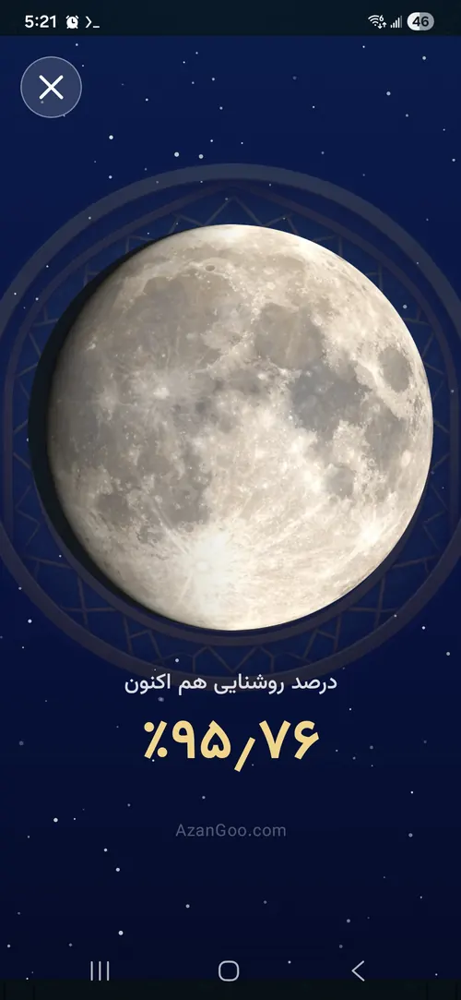
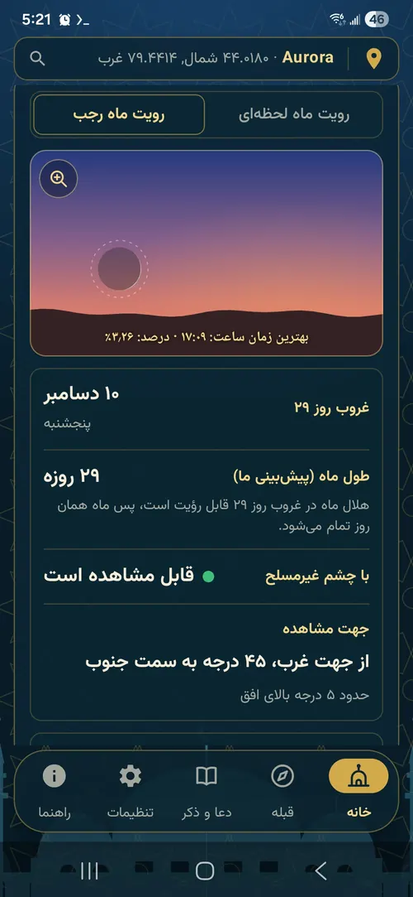
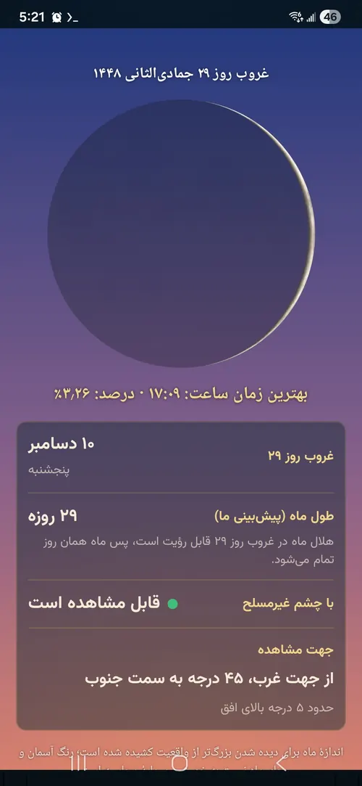
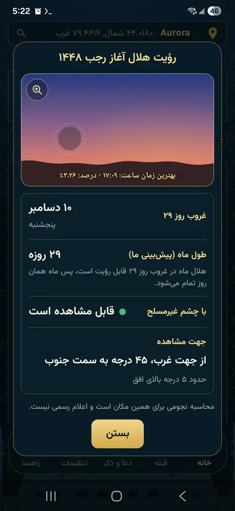
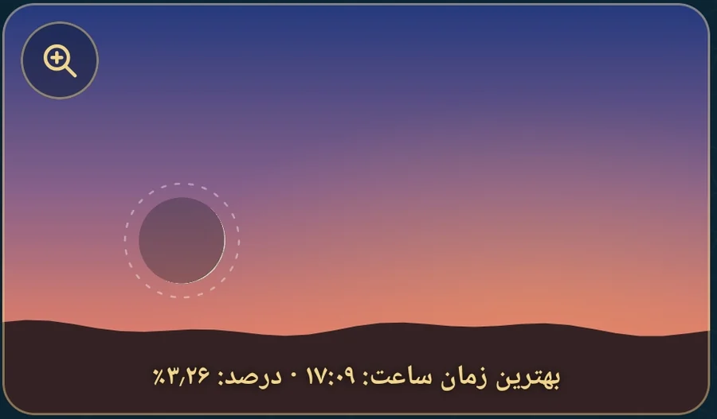
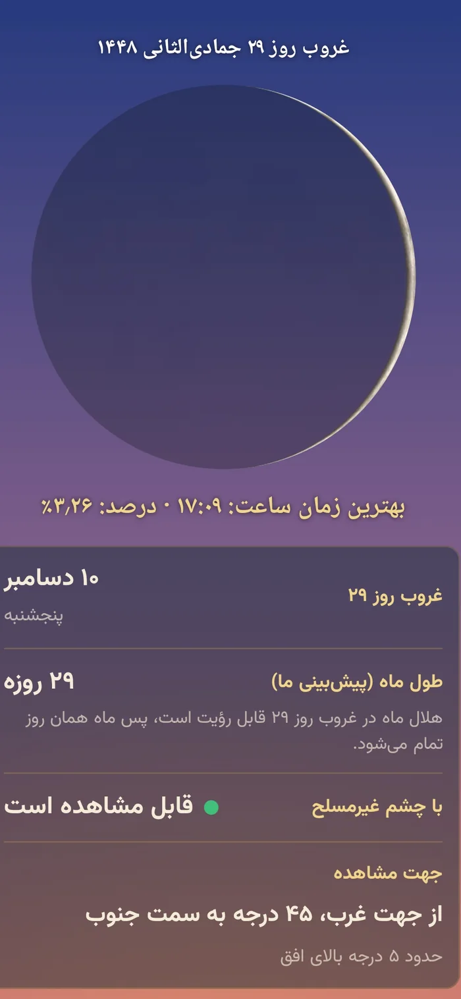
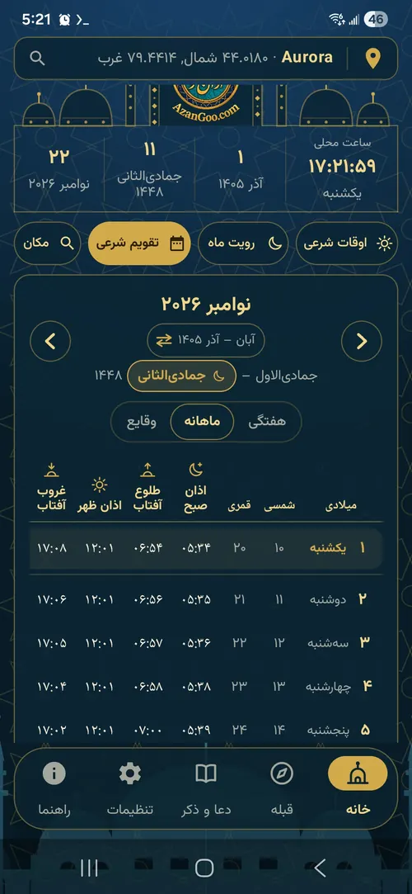
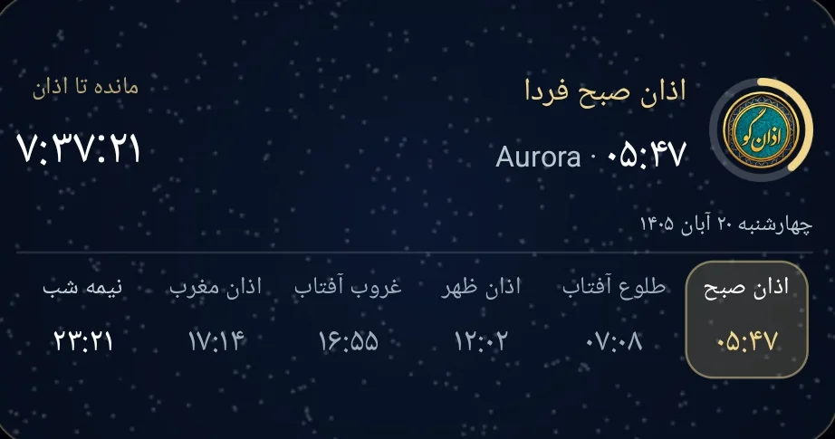

با چشم غیرمسلح
هلال با چشم عادی دیده میشود.
ماه ۲۹ روزهماه همین امشب، بهترین زمان و جهت دیدن هلال، و پیشبینی ۲۹ یا ۳۰ روزه بودن ماه قمری، همه برای مکان شما.

ماه را همین حالا ببینید و بدانید هلال بعدی کی، کجا و با چه شرایطی دیده میشود.
این نتیجه یک برآورد علمی است، نه اعلام رسمی، و ممکن است با اعلام مرجع تقلید یا مرجع رسمی شهر شما تفاوت داشته باشد. «دید افق» فقط وضع هوا را نشان میدهد و حکم رؤیت را تغییر نمیدهد. برای رمضان و عید به مرجع خودتان رجوع کنید.




برای ماه قمری بعد، برنامه نمای آسمان لحظهٔ غروب روز ۲۹ را نشان میدهد: افق، جای هلال، بهترین زمان دیدن و درصد روشنایی ماه، همه برای مکان شما.
این نتیجه پیشبینی برنامه است، نه اعلام رسمی؛ اعلام رسمی را مرجع دینی یا رسمی محل شما میدهد.


برنامه در غروب روز بیستونهم ماه قمری، موقعیت خورشید و ماه را برای مکان شما حساب میکند و با معیار عودة (Odeh) بررسی میکند که هلال تازه در آن مکان دیده میشود یا نه. این معیار بر پایهٔ ارتفاع ماه از افق و پهنای هلال هنگام غروب است.
هلال با چشم عادی دیده میشود.
ماه ۲۹ روزهبا دوربین یا تلسکوپ دیده میشود و شاید با چشم غیرمسلح هم ممکن باشد.
ماه ۲۹ روزهفقط با دوربین یا تلسکوپ دیده میشود.
ماه ۳۰ روزههلال در آن مکان دیده نمیشود.
ماه ۳۰ روزهاگر هلال در حالتهای سبز یا زرد باشد، ماه جاری همان روز ۲۹ تمام میشود. در حالتهای نارنجی و قرمز ماه ۳۰ روز کامل میشود. آغاز ماه بعد هم بر همین پایه نشان داده میشود.
این زبانه پیشبینی میکند که در غروب روز ۲۹ ماه قمری جاری، هلال ماه نو در مکان شما دیده میشود یا نه. در روزهای ۲۸، ۲۹ و ۳۰ ماه قمری، صفحهٔ رؤیت ماه بهجای ماه لحظهای خودش روی همین زبانه باز میشود (اعلانی نمیآید). اگر در این روزها روی زبانهٔ اول باشید، تا وقتی زبانهٔ ماه بعد را باز نکردهاید یک نقطهٔ طلایی روی آن میماند. اگر خودتان زبانهای را انتخاب کنید، اپ آن را عوض نمیکند.


اوقات برای مکان شما، پخش یا اعلان برای هر اذان، دعا قبل و بعد از اذان، دعاهای رمضان و روشهای محاسبه.
مشاهده ←
اذان بعدی و شمارش معکوس روی صفحهٔ اصلی گوشی، ویجت ماه و اعلانهای اذان و دعا.
مشاهده ←
قبلهنما، دعا و زیارت، تسبیح، چهار زبان، پوسته، قالب ساعت، کار بدون اینترنت و حریم خصوصی.
مشاهده ←اذان گو در حال آزمایش بسته در گوگل پلی است. اگر آزمایشکنندهاید، با چهار قدم ساده برنامه را نصب کنید و نظرتان را برایمان بفرستید.
درخواست شما هنوز برای ما نرسیده است. در برنامهٔ ایمیلی که باز شد دکمهٔ Send را بزنید. اگر چیزی باز نشد، یکی از راههای زیر را امتحان کنید:
بهمحض اینکه ایمیل را به فهرست اضافه کنیم، لینک دانلود برای همین ایمیل میآید. لطفاً کمی صبر کنید و پوشهٔ اسپم را هم نگاه کنید.
فقط ایمیل حساب گوگلی را بنویسید که روی گوشی اندرویدتان وارد شده است. این صفحه ایمیل شما را خودش ذخیره یا ارسال نمیکند؛ ارسال از برنامهٔ ایمیل خودتان انجام میشود. هر مشکلی داشتید به app@azangoo.com بنویسید.